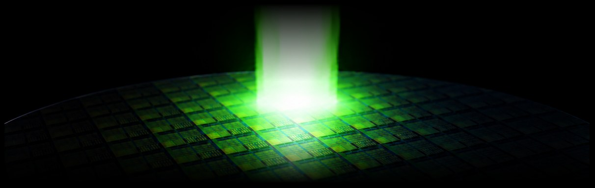
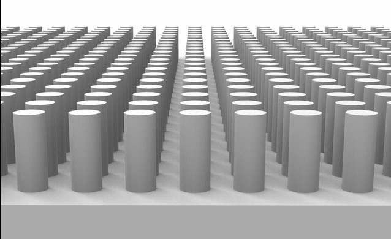
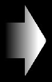
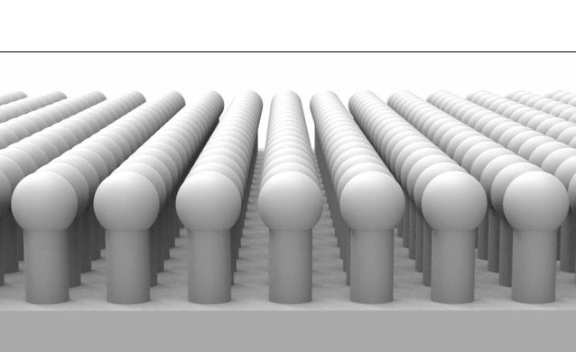
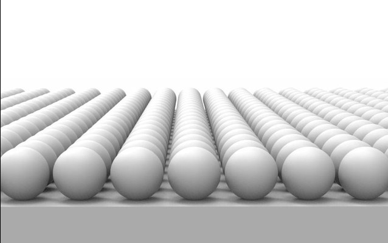

Raman Measurement
Raman scattering은 입사광이 시료의 분자 진동 등과 상호작용하여 에너지가 변하는 비탄성 산란 현상입니다.
입사광 대비 산란광의 에너지 차이인 Raman shift와 Peak intensity를 통해 시료의 종류, 구조 및 농도를 분석할 수 있습니다.

표준시료(R6G)의 Raman shift

SERS
Surface Enhanced Raman Scattering
Nanogap은 gap사이에 존재하는 시료의 Raman 신호를 증폭하여 시료의 특성을 명확하게
확인할 수 있도록 합니다.

Fabrication Method
ANSERS는 세계최초로 Nanosecond pulse-laser annealing을
SERS 제작공정에 적용하였습니다.




레이저가 만드는 국소적 온도구배는 실리콘의 표면확산을 유도하여
마이크로 크기의 원기둥을 균일한 구형으로 진화 시킵니다.